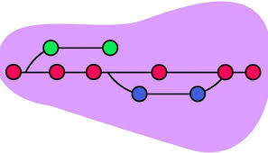
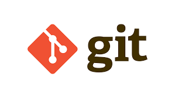
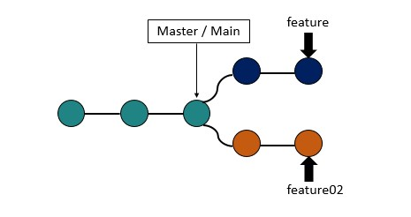
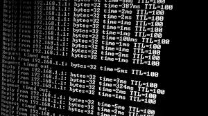

¿Qué es un control de versiones?

Un control de versiones es un sistema que registra los cambios realizados en archivos a lo largo del tiempo. Permite llevar un historial de las modificaciones, facilitando la colaboración y la gestión de proyectos.
¿Qué es GIT?

GIT es un sistema de control de versiones distribuido, diseñado para manejar desde proyectos pequeños hasta muy grandes con rapidez y eficiencia.
¿Qué es un repositorio?
.png)
Un repositorio es un espacio donde se almacenan los archivos de un proyecto, junto con metadatos asociados. Puede ser local (en la máquina del usuario) o remoto (en un servidor).
Los repositorios locales son versiones del proyecto en la máquina de un usuario, mientras que los remotos son versiones compartidas accesibles a través de Internet, facilitando la colaboración entre desarrolladores.
¿Qué es GITHUB?
.png)
Github es una plataforma de desarrollo colaborativo basada en GIT. Permite alojar proyectos usando GIT y ofrece herramientas para revisión de código, seguimiento de problemas y otras características útiles para la gestión de proyectos de software.
¿Qué es una rama en GIT y para qué sirve?

Una rama en GIT es una línea de desarrollo separada que permite trabajar en características nuevas o modificaciones sin afectar la rama principal (usualmente llamada 'master' o 'main'). Esto facilita el desarrollo simultáneo de múltiples funcionalidades y la gestión de versiones estables del software.
¿Cuáles son los estados en GIT?

- Untracked: Archivos no gestionados por GIT.
- Modified: Archivos modificados pero no aún confirmados.
- Staged: Archivos preparados para ser incluidos en el próximo commit.
- Committed: Archivos confirmados y almacenados de manera segura en la base de datos de GIT.
¿Qué es la terminal, consola o línea de comandos y para qué sirve?

La terminal, consola o línea de comandos es una interfaz de texto que permite interactuar directamente con el sistema operativo mediante comandos. Es especialmente útil para ejecutar tareas avanzadas de gestión de archivos, automatización de procesos y control de versiones como GIT.